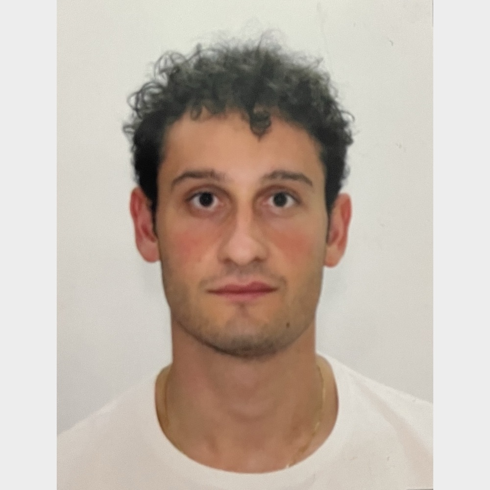

Columbia Business School
MBA, Private Equity Pathway, May 2027
Member: CBS Private Equity Club; Attendee, 32nd Annual Private Equity Conference (Feb 27, 2026)

MBA, Private Equity Pathway, Columbia Business School
MBA, Private Equity Pathway, May 2027
Member: CBS Private Equity Club; Attendee, 32nd Annual Private Equity Conference (Feb 27, 2026)
MSc, Mechanical Engineering, December 2023
Minor: Production Engineering, Project Management
BSc, Mechanical Engineering
International Aerospace, Defense & Security industrial group
Specialized international supplier for the sustainable mobility sector
Foundation dedicated to social change, raising €360K annually, benefitting +1300 beneficiaries yearly
I asked gpt-4o-mini, through the OpenAI API, to act as a venture investor and pick one of three Series A startups. Across three runs of 216 fully counterbalanced prompts, I varied one factor at a time and used chi-square tests to see what actually drives the choice.